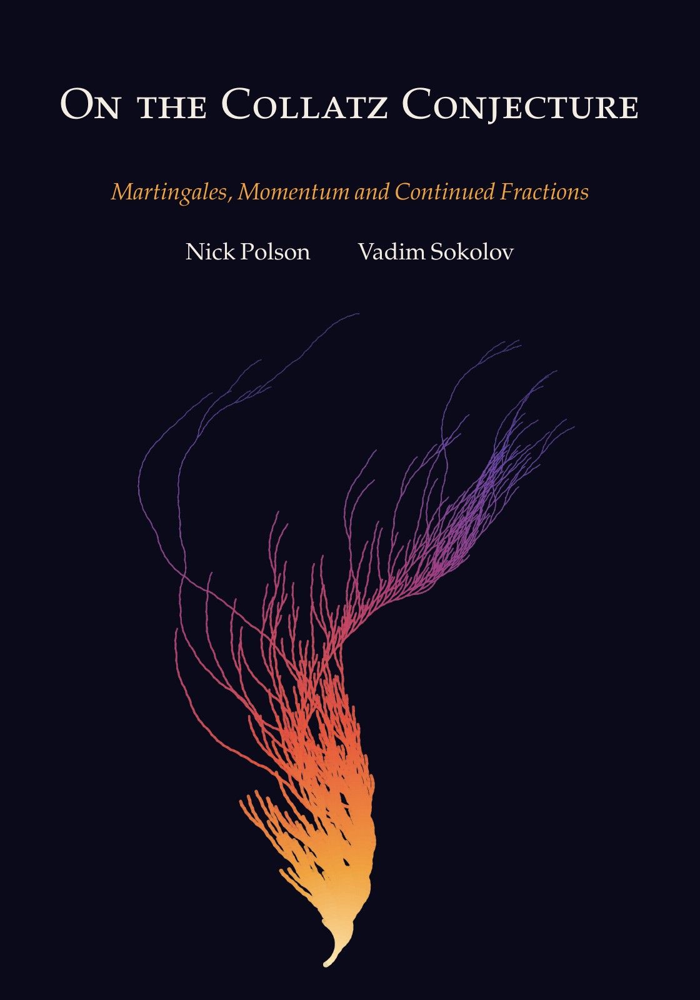

On the Collatz Conjecture Martingales, Momentum and Continued Fractions
By Nick Polson and Vadim Sokolov.


Description
The Collatz conjecture says that, from any positive integer, repeatedly halving an even number and sending an odd number n to 3n+1 always reaches 1. This book explains why the problem has resisted proof. It reads the map as a random walk, as an optimization algorithm and as a problem in Diophantine approximation, and it makes each obstruction precise.
The conjecture splits into a divergence half, a law of large numbers along a single deterministic orbit, and a cycle half, a question about rational approximation of log2 3 that Diophantine information alone cannot finish. The book proves that no Lyapunov function increasing in the number certifies descent over any fixed number of steps, and that no finite residue sieve certifies descent for every integer. It proves that however far the computer verification is pushed, infinitely many cycle lengths survive the cycle inequality, so the inequality and the verification alone cannot exclude all cycles, a point Halbeisen and Hungerbühler made earlier in another form.
The arithmetic of the map also yields an algorithm. Switching MM, a first order method that applies the momentum log2 3 minus 1 on alternate steps, has an explicit linear rate at step 1/L on smooth strongly convex functions, and on quadratics with additive gradient noise, at steps up to 1/L, its noise variance stays below 5/3 times that of gradient descent for every momentum coefficient below one. The gain weight theorem shows that on quadratics with small steps no stable linear periodic first order method has a lower slow mode noise floor than gradient descent at matched speed.
Every result is proved in full or marked as conditional, the open problems are collected in the closing chapter, and the Python scripts behind every computed number, figure and table are in the repository.
How to cite
Polson and Sokolov (2026), On the Collatz Conjecture: Martingales, Momentum and Continued Fractions, edition 1, https://doi.org/10.5281/zenodo.23421852.
@book{polsonsokolov2026collatz,
author = {Polson, Nick and Sokolov, Vadim},
title = {{On the Collatz Conjecture: Martingales, Momentum and Continued Fractions}},
year = {2026},
publisher = {Independently published},
doi = {10.5281/zenodo.23421852},
url = {https://vsokolov.org/books/collatz/}
}Main results
- No fixed horizon monotone certificate for Collatz descent (Corollary 4.15, page 78): For every fixed number J of strides, no strictly increasing function of x certifies descent over J Syracuse strides, because the odd integers congruent to minus 1 modulo 2 to the J+1 ascend for J strides in a row.
- Noise bound for Switching MM uniform in the normalized step (Proposition 8.7, page 130): On a quadratic with additive gradient noise, on every eigendirection with normalized step up to one, the stationary variance of Switching MM lies between that of gradient descent and 5/3 times it, uniformly over momentum coefficients below one, whereas every step momentum amplifies slow mode noise by a factor that grows without bound as the coefficient tends to one.
- Gain weight theorem for the noise floor of periodic first order methods (Theorem 8.12, page 135): For any linear periodic first order method on a quadratic that is stable at zero normalized step and has positive total gain, the slow mode noise floor at matched speed relative to gradient descent is a Cauchy and Schwarz ratio of the step gains, at least one, and equal to one only when all gains are equal.
- Exact linear rate of Switching MM on smooth strongly convex functions (Theorem 9.9, page 164): For strongly convex and L smooth functions, two steps of Switching MM at step one over L contract the distance to the minimizer by the product of the classical one step factors of a long and a short gradient step, which explicit functions show is the exact worst case over the class, and the function gap by its square, using the one step function value bound of Taylor, Hendrickx and Glineur (2018).
- Diophantine insufficiency, infinitely many cycle lengths survive any verification range (Proposition 11.20, page 205): However far the verification of the Collatz conjecture is pushed, infinitely many cycle lengths survive the cycle inequality, so information about the approximation of log2 3 alone cannot exclude all nontrivial cycles, a point Halbeisen and Hungerbühler (1997) made earlier in another form.
- Residue certificates cannot prove descent for all integers (the exceptional 2 adic set) (Proposition 15.1, page 267): No residue certificate of finite level can certify descent for every integer, because every residue class it leaves uncovered contains infinitely many positive integers, while the 2 adic integers with infinite coefficient stopping time form a closed null set that contains a point of each known negative cycle.
All 66 results of the book (48 proved, 3 conditional, 15 open) are on the page Results by chapter, each with its statement, status and number.
License: Text, figures and PDF: CC BY 4.0. Code: MIT.
This page is generated from the book’s repository (main). The numbers and pages are those of the PDF, version 1.1.0.